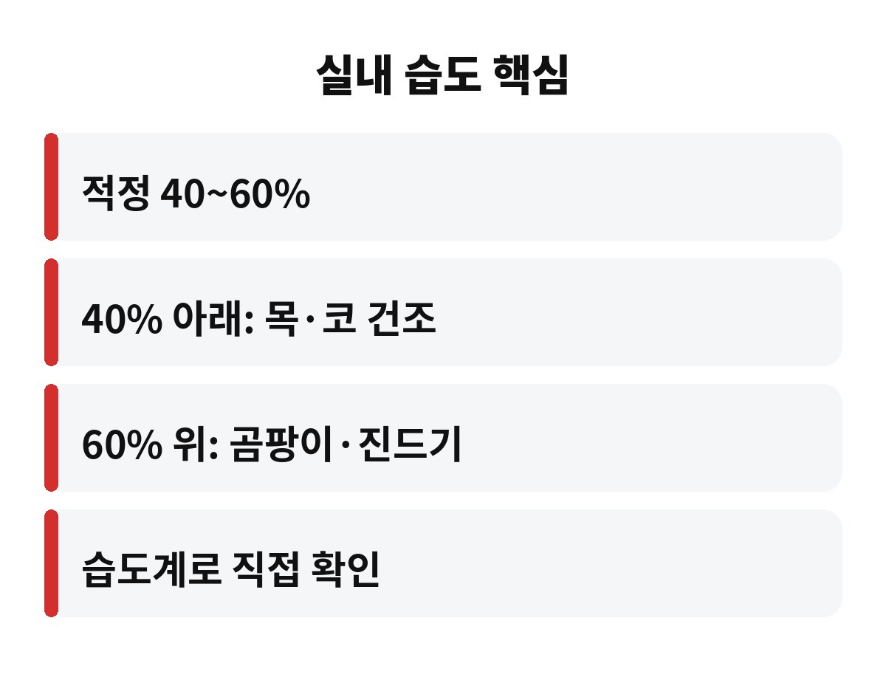

실내 습도는 보통 40~60%가 적정선이고, 40% 아래로 내려가면 목과 코 점막이 먼저 마르기 시작해요. 겨울을 앞두고 유독 감기를 달고 사는 집이라면, 혹시 우리 집 습도부터 안 재보신 건 아닐까요?
난방을 켜기 시작하는 요즘이 딱 위험한 시기예요. 오늘은 실내 습도가 왜 중요한지, 가습기를 어떻게 써야 오히려 후회하지 않는지 쉽게 풀어드릴게요.
코와 목 안쪽 점막은 촉촉해야 먼지와 바이러스를 걸러내는 제 역할을 해요. 공기가 건조해지면 이 점막이 마르면서 방어력이 떨어지고, 아침에 일어났을 때 목이 칼칼한 느낌이 들죠.
또 건조한 공기에서는 바이러스가 더 오래 떠다닌다는 이야기도 널리 알려져 있어요. 그래서 겨울에 감기와 독감이 늘어나는 이유 중 하나로 건조함이 꼽히는 거고요.
피부가 당기고, 눈이 뻑뻑하고, 정전기가 자주 튄다면 이미 우리 집 실내 습도가 낮다는 신호일 수 있어요.

여기가 함정이에요. 습도는 높으면 높을수록 좋은 게 아니거든요. 60%를 넘기면 곰팡이와 집먼지진드기가 좋아하는 환경이 돼서, 알레르기나 비염이 있는 분들에게는 오히려 독이 될 수 있어요.
특히 가습기는 물통과 내부 관리를 안 하면 세균이 번식한 물방울을 집 안에 뿌리는 꼴이 될 수 있어요. 물은 매일 갈아주고, 통은 자주 씻고 말려서 쓰는 게 기본이에요.
그래서 "틀어놓고 잊어버리기"가 가장 위험해요. 습도계를 하나 두고, 숫자를 보면서 조절하는 게 훨씬 똑똑한 방법이죠.
가습기가 부담스럽다면 생활 속 방법도 있어요. 빨래를 실내에 널어 말리거나, 젖은 수건을 걸어두거나, 샤워 후 욕실 문을 잠시 열어두는 것만으로도 습도가 조금 올라가요.
| 습도 구간 | 이럴 수 있어요 |
| 40% 미만 | 목·코·피부 건조, 정전기 |
| 40~60% | 대체로 쾌적한 적정 구간 |
| 60% 초과 | 곰팡이·진드기 번식 우려 |
물을 자주 마시는 것도 의외로 도움이 돼요. 몸 안쪽에서 점막을 촉촉하게 유지해 주니까요. 난방 온도를 너무 높이지 않는 것도 건조함을 줄이는 팁이에요.
아이가 있는 집, 어르신이 계신 집, 비염이나 천식이 있는 분이라면 특히 더 신경 쓰는 게 좋아요. 호흡기가 예민한 분들은 건조함에도, 곰팡이에도 모두 영향을 받기 쉽거든요.
밤새 이어지는 건조함은 수면의 질에도 영향을 줘요. 자다가 목이 말라 깨는 일이 잦다면 침실 습도부터 한번 확인해 보세요.
습도계는 몇 천 원대로도 구할 수 있으니, 이번 주에 하나 놓아보시는 걸 추천해요. 지금 우리 집 거실 습도는 몇 퍼센트일까요? 댓글로 알려주시면 같이 얘기해 봐요. 도움이 되셨다면 구독도 부탁드려요!
※ 이 글은 일반적인 건강 정보이며, 증상이 계속되면 반드시 전문의와 상담하세요.